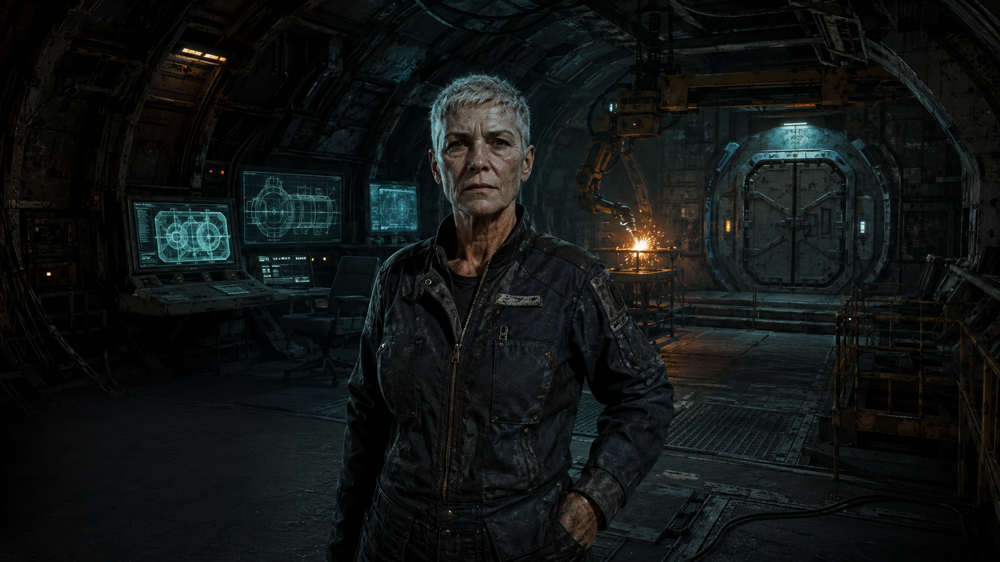
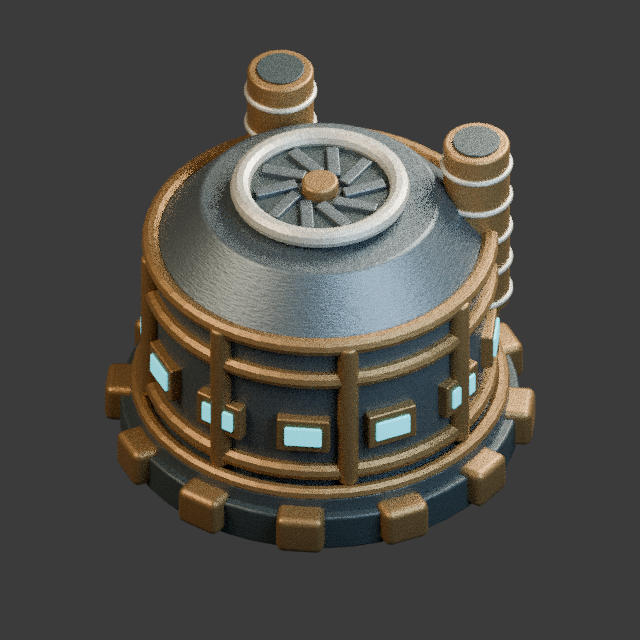
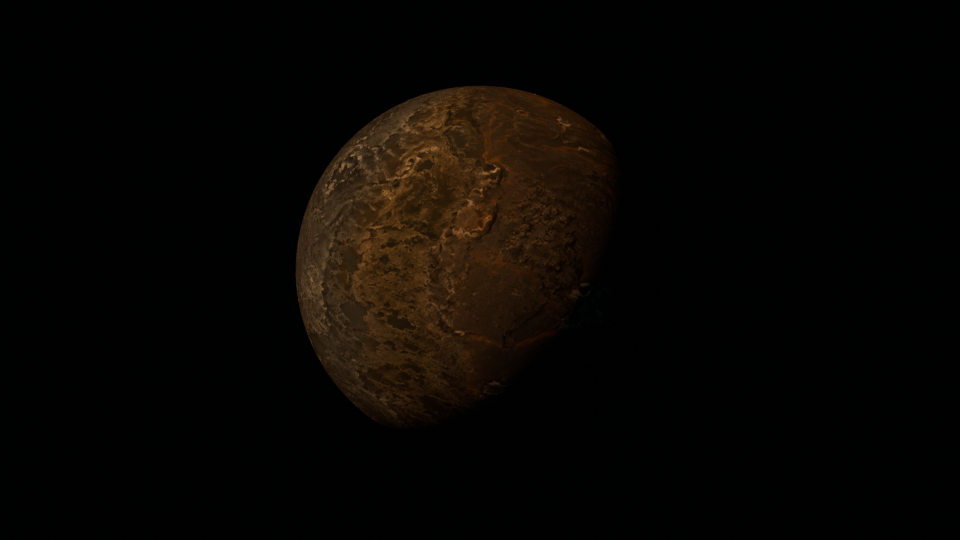

Trois essais à regarder, arrêter et comparer. Des mouvements courts, une coque qui passe, un peu de bruit dans les machines.

POSTE / ENTRETIEN DE COQUE
Un premier essai de soudure.
Des soudures isolées, parfois une reprise rapprochée, puis du calme. Le cœur lumineux et son reflet suivent le grain du son. Un écran balaie le plan, un point suit une pièce sur le deuxième, des cellules s’activent sur le troisième. Les lampes respirent doucement ; deux grésillements accompagnent un bref défaut de lumière. Le bras peint reste fixe ; une option permet d’essayer la respiration et une légère inclinaison de tête.
ESSAI DE DÉCOR
Mixeur du poste
Activez le son et lancez l’essai. « Écouter seule » isole une piste ; cliquez de nouveau pour retrouver le mélange.
Voir le bras reconstruit dans Blender
Se dégager. Revenir. Souder.
Référence dans le portrait
Retrait rapide, retour franc, approche lente puis torche stable sur la pièce pendant la soudure. Vingt secondes, avec des soudures isolées et une paire rapprochée. Le moteur suit les déplacements ; le crépitement accompagne le contact. Les parties cachées sont interprétées. Ce bras n’est pas encore superposé au décor : il faut d’abord retirer celui qui est peint.
La lumière peinte est atténuée entre les impulsions, puis renforcée avec les gerbes. Son nettoyage complet et le remplacement du bras peint restent nécessaires avant intégration. Le portrait en jeu reste inchangé.

CENTRALE / VENTILATION
Le carter tient. Les pales tournent.
Le modèle existant prend son premier mouvement : une ventilation lente, visible au-dessus de la cuve.
BOUCLE 3D
L’arrêt est une comparaison visuelle. Cet essai ne commande ni la production ni les stocks du jeu.

AMER / PREMIÈRE APPROCHE
Du corps lointain aux reprises de coque.
Estran, le passage du Ludion, puis une consigne écrite sur le métal. Trois plans, quinze secondes.
MONTAGE 3D
Texture d’Estran partagée avec l’atlas. Nouveau modèle du Ludion ; matières et mouvement encore à valider. L’ancienne cinématique est conservée dans la galerie.
Image fixe · son coupé. L’animation démarre seulement sur votre clic.
À conserver si le mouvement convient
Une action locale lisible, un décor stable et un son séparé. Soudure réelle : Arc Welding.wav — squashy555, sous CC0. Extraits montés et petits arcs électriques dérivés du même son. Les autres ambiances sont synthétisées, sans voix.
Encore à préparer
La respiration et les gestes du Maître demandent de séparer le personnage du décor ou de l’articuler. Déformer tout le portrait ferait bouger les machines avec lui. Aucun personnage 3D animé n’est présenté ici.
Avant l’intégration au jeu
Valider le style et la discrétion des effets, raccorder les cadrages des rapports, puis relier chaque animation à l’état réel de son bâtiment. Ces pages ne modifient aucune sauvegarde.